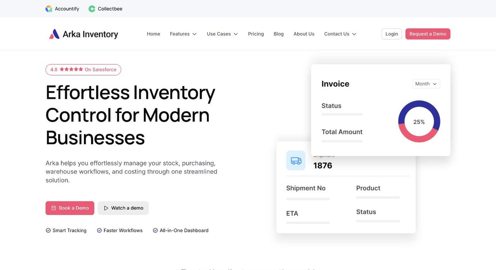

Arka Inventory Review (2026): Real-Time Stock and Warehouse Management for Salesforce Teams
Arka Inventory runs stock, warehouses, purchasing and light manufacturing inside Salesforce. It is rated 4.8 from 46 reviews on AppExchange, with plans from $199 a month. Here is what it does well, where it falls short, and who should buy it.

Our rating: 4.4/5. Arka Inventory is one of the best-rated inventory apps on Salesforce AppExchange (4.8 from 46 reviews) and a strong choice for small and mid-sized manufacturers and distributors that want stock, warehouse and purchasing control inside Salesforce. Its main limitations are that advanced features such as lot and serial tracking sit in the custom-priced Enterprise plan, and that support runs on Indian business hours.
Small and mid-sized manufacturers and wholesale distributors that already run sales in Salesforce and want real-time stock, warehouse control and purchasing in the same place.
What is Arka Inventory?
Arka Inventory is an inventory, warehouse, purchasing and cost management app built natively on Salesforce. Because it runs inside Salesforce rather than syncing with it, stock levels, purchase orders and production sit next to the accounts, opportunities and orders your sales and service teams already use. There is no connector to maintain and no overnight sync.
It is made by Arka BizApps, which has served customers since 2018 and has been on Salesforce AppExchange since 2019; its implementation team works from Bengaluru and Hyderabad, India. The app is Lightning Ready and supports the Enterprise, Unlimited and Developer editions of Salesforce.
Key takeaways
Highly rated
4.8 on Salesforce AppExchange (46 reviews) and 4.6 on Capterra (10 reviews), where customer service scores 4.9 out of 5.
Broad coverage
Stock visibility, warehouse operations, purchasing, bills of materials, order commitment and lot/serial traceability.
Published pricing
Plans start at $199 a month billed yearly; lot/serial tracking and sales orders need the custom-priced Enterprise plan.
Clear fit
Best for SMB and mid-market manufacturers and distributors already on Salesforce.
Key features of Arka Inventory
Arka covers six main areas. The first three are in every plan; manufacturing starts on Advance, and full traceability on Enterprise.
Inventory visibility and alerts
Real-time stock across locations, stock on order, lead-time insights and raw-material levels. Alerts flag back orders, low stock and inventory movements, and teams can act on them inside Salesforce.
Warehouse operations
Receiving and putaway, palletising, bins, pick and pack, barcodes, QR codes, pallet labels, packing slips, FIFO picking and returns management across multiple warehouses.
Order commitment
Commit Inventory allocates and reallocates stock against orders by delivery date. This prevents overselling and gives sales teams reliable dates to share with customers.
Manufacturing
Standard and order-based bills of materials, material availability checks, consumption tracking, production planning and kitting (Advance plan and up).
Traceability and cost
Lot, batch, expiry and serial-number tracking, plus landed cost and bin tracking (Enterprise plan).
Integrations
Works with Sales Cloud, Service Cloud, CPQ, Commerce Cloud and Field Service, and connects to QuickBooks Online and Tally for accounting. Arka's objects do not count against Salesforce org limits.
How much does Arka Inventory cost?
Arka Inventory costs $199 a month for the Basic plan and $499 a month for the Advance plan, both billed yearly. Enterprise is custom-priced. Salesforce licences are not included, and every Arka user needs one on a supported edition.
Basic: $199/month
1 user included, extra users $42/month. Multiple warehouses, purchase orders and transfers, barcoding and packing slips, inventory alerts.
Advance: $499/month
2 users included, extra users $52/month. Everything in Basic plus bills of materials, production and kitting.
Enterprise: custom
Everything in Advance plus sales orders, lot/serial tracking, landed cost and bin tracking, and dedicated onboarding and support.
What five users cost: on Basic, $199 plus four extra users at $42 comes to $367 a month. On Advance, $499 plus three extra users at $52 comes to $655 a month. Both are billed yearly and exclude Salesforce licences.
Arka offers a no-commitment trial, and AppExchange lists discounts for non-profits. Note that the AppExchange listing shows a starting price of $79 per user per month, which differs from the plans on Arka's own website, so confirm the price for your user count with Arka before you buy.
What users like about Arka Inventory
Reviews on AppExchange, Capterra and G2 point to the same strengths again and again.
Real-time visibility
Reviewers highlight seeing stock levels and item history, spotting discrepancies early and reducing waste.
Lot and multi-warehouse tracking
Traceability across locations, receipts, production and returns.
Ease of use
It feels like part of Salesforce, so existing users have little new to learn. Capterra users rate ease of use 4.6 out of 5.
Support
Capterra reviewers rate customer service 4.9 out of 5, and several reviews mention customised reporting help from the team.
Arka Inventory limitations
No tool fits everyone. These are the trade-offs to weigh before you buy.
Advanced features cost more
Lot/serial tracking, sales orders and landed cost need the custom-priced Enterprise plan.
Salesforce is required
Every user needs a Salesforce licence on a supported edition. If you don't use Salesforce, Arka is not for you.
Support hours
Email, chat and phone support runs 9 AM to 6 PM IST, Monday to Friday, with a 24-hour response target. US and European teams should plan around the time difference.
Not a full ERP
Accounting runs in QuickBooks Online or Tally, not in Arka. Some reviewers also mention that bundle BOM linkage could be better.
Arka Inventory vs alternatives
The main choice is between a native Salesforce app like Arka, a full Salesforce ERP, or a standalone inventory tool that syncs with Salesforce.
Arka vs Rootstock
Rootstock is a full manufacturing ERP on Salesforce with quote-based pricing. Arka is lighter, faster to adopt and publishes its prices.
Arka vs Axolt
Axolt prices per user per module and adds multi-carrier shipping. Arka's flat plans can work out cheaper for teams where several people need access.
Arka vs Zoho Inventory, inFlow or Cin7
These are standalone tools that sync with Salesforce through a connector. They can look cheaper at entry level, but Salesforce teams pay for the connector and live with sync delays. Arka runs inside Salesforce, so there is nothing to sync.
How Arka fits a typical order-to-cash workflow
Here is how a sale moves through Arka, from quote to after-sales service.
Quote
A rep checks real-time stock across warehouses on the opportunity.
Commit
Once the deal is won, stock is committed to the order by delivery date.
Buy
Low-stock alerts trigger purchase orders to suppliers.
Receive
The warehouse receives goods against the PO and puts them away to bins.
Build
If the product is assembled, production consumes components through the bill of materials.
Ship
Pickers pick and pack with barcodes, then dispatch with a packing slip.
Serve
Service agents see the order and its history on the account; returns go back into stock.
Implementation and support
Arka is installed from AppExchange as a managed package. After purchase, customers receive activation instructions by email and get portal access once activated. Enterprise customers get dedicated onboarding.
Support is available by email, live chat and phone, Monday to Friday, 9 AM to 6 PM IST, with a target response within 24 hours and priority handling for urgent issues. Customers can export their data at any time, and data stays available for 30 days after cancellation before it is deleted.
Our Arka Inventory scorecard
We scored Arka on six areas. The overall rating of 4.4 out of 5 is the average of these scores.
Inventory visibility: 4.5/5
Real-time stock, stock on order and lead times across locations.
Warehouse operations: 4.5/5
Bins, putaway, pick and pack, barcodes and returns.
Manufacturing: 4.0/5
BOMs, production and kitting; not a full MRP.
Salesforce fit: 5.0/5
Native, no org-limit impact, works across Sales, Service and CPQ.
Value for money: 4.0/5
Published entry pricing; advanced features need Enterprise.
Support: 4.5/5
Highly rated by reviewers; India business hours.
Scores are our editorial assessment based on published features, pricing and user reviews. Information was checked against Arka Inventory's website, Salesforce AppExchange, Capterra and G2 in November 2026.
Who should use Arka Inventory?
Choose Arka Inventory if you are a small or mid-sized manufacturer or distributor that already runs sales in Salesforce and wants real-time stock, warehouse control and purchasing in the same place. Distributors lean on multi-warehouse stock, purchasing and order commitment; manufacturers use bills of materials, production and kitting; and regulated businesses use lot, batch and expiry tracking. Arka also serves retail, healthcare, non-profit and eCommerce operations.
Look elsewhere if you need a full ERP with built-in accounting, or if your company does not use Salesforce.
Frequently asked questions
Is Arka Inventory good?
Yes. It is rated 4.8 from 46 reviews on Salesforce AppExchange and 4.6 on Capterra, with reviewers praising real-time visibility, lot and multi-warehouse tracking, and support. We rate it 4.4 out of 5.
How much does Arka Inventory cost?
The Basic plan is $199 a month and Advance is $499 a month, both billed yearly. Enterprise has custom pricing. Extra users cost $42 a month on Basic and $52 a month on Advance, and Salesforce licences are extra.
Does Arka Inventory require Salesforce?
Yes. Arka is built natively on Salesforce and every user needs a Salesforce licence on the Enterprise, Unlimited or Developer edition.
Does Arka Inventory work with QuickBooks?
Yes. It connects to QuickBooks Online, and also to Tally.
Does Arka Inventory support lot and serial tracking?
Yes, including batch and expiry dates, on the Enterprise plan.
Does Arka Inventory support manufacturing?
Yes. Bills of materials, production planning and kitting are included from the Advance plan. It is not a full MRP system, though.
Is there a free trial of Arka Inventory?
Arka offers a no-commitment trial. Contact the vendor or book a demo to set it up.
What are the best Arka Inventory alternatives?
Rootstock (a full manufacturing ERP on Salesforce), Axolt (modular, priced per user per module), and standalone tools such as Zoho Inventory, inFlow and Cin7 that sync with Salesforce through a connector.
What are Arka Inventory's support hours?
Email, live chat and phone support runs Monday to Friday, 9 AM to 6 PM IST, with a target response within 24 hours and priority handling for urgent issues.
Arka Inventory earns its 4.4 out of 5 by doing one thing very well: putting real-time stock, warehouse operations, purchasing and light manufacturing directly inside Salesforce, with published prices and support that reviewers consistently praise. If you are a small or mid-sized manufacturer or distributor already on Salesforce, it is one of the strongest options on AppExchange. Just budget for the Enterprise plan if you need lot/serial tracking or sales orders, and plan around India support hours if your team is in the US or Europe.
More brand reviews
Try Arka Inventory yourself
Small and mid-sized manufacturers and wholesale distributors that already run sales in Salesforce and want real-time stock, warehouse control and purchasing in the same place.
Visit Arka Inventory →See the full Arka Inventory listing on ToolScout, including pricing and alternatives.